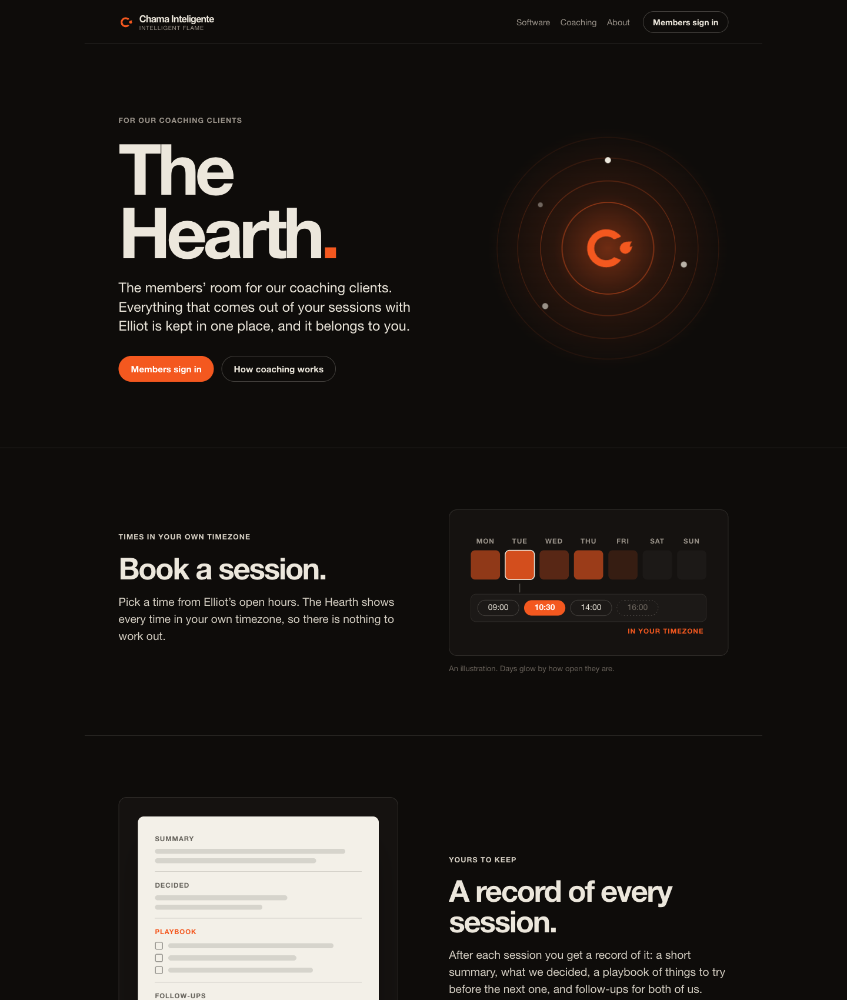
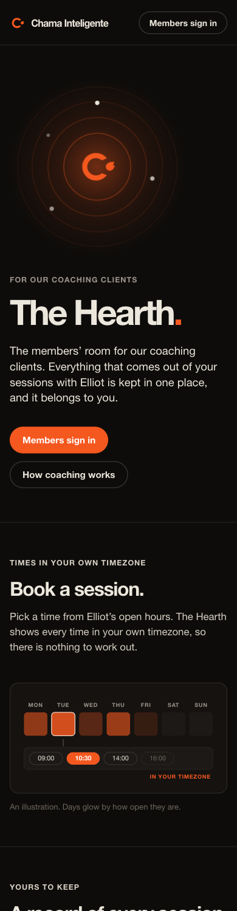

Signed-out visitors and link previews now get a page that explains the Hearth to prospective coaching clients. Members with a session get the room at the same address, and LinkedIn links to it.


/hearth: 200, robots meta index, og:title, description, image (200 PNG) and url./hearth serves the room and /api/hearth/me answers 200./hearth/sign-in shows the sign-in gate, noindex. www redirects to the bare domain./hearth. Sitemap, llms.txt, robots.txt and the wiki claims ledger are updated.Nobody has booked through the room yet, and no client has connected an agent over OAuth, so the page describes those as features and promises no Meet or calendar details.
The click-through as a signed-in member was checked with curl, not in a browser, because setting the session cookie in the browser pane was blocked.